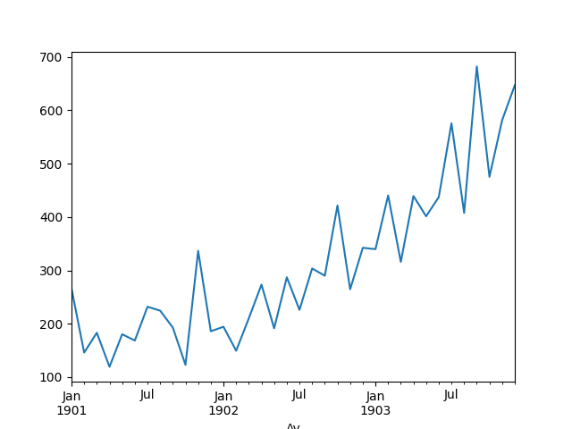
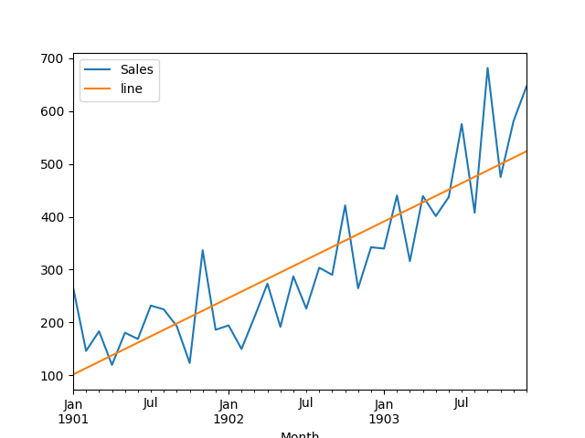
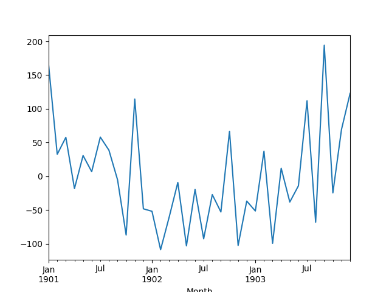
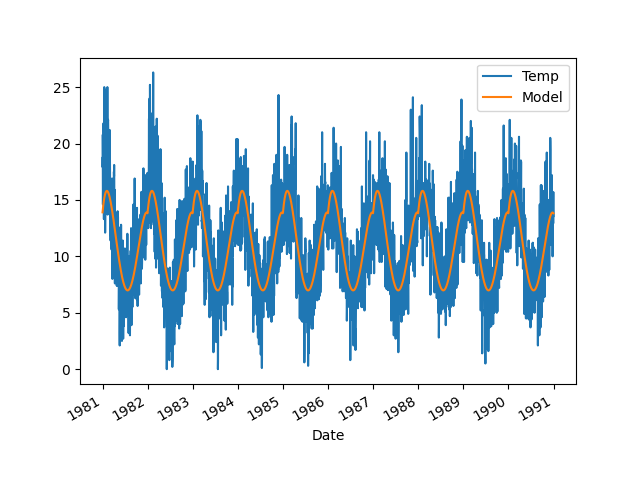
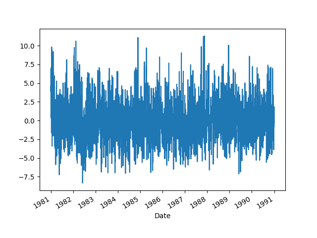

Zaman serilerini trendini, sezonşallığını nasıl inceleriz, ve trendde değişim varsa bunu nasıl yakalarız?
Bir örnek üzerinde görelim, bir şirketin şampuan satış kazancı, veri [1]'den,
import pandas as pd
def parser(x):
return pd.datetime.strptime( '190'+x, '%Y-%m' )
df = pd.read_csv('shampoo-sales.csv', header=0, index_col=0, \
parse_dates=True, date_parser=parser)
df.Satis.plot()
plt.savefig('tser_022_de_07.png')

Yukarı doğru bir trend var. Bu trendi veriye bir düz çizgi uydurarak (fit), yani
tek değişkenli, ikinci derece lineer regresyon yaparak yakalayabiliriz. Bunu
yapmayı pek çok diğer derste gösterdik, statsmodels.regression
paketinden, linear_model.OLS ile, statsmodels.formula.api ile,
ya da direk Lineer Cebir kullanarak.. Altta polyfit çağrısı
kullanılacak.
Modelden gelen katsayıları (coefficients) kullanıp tahmini $y$ değerleri üretmek için alttaki fonksiyon var,
def model_compute(X, coef):
degree = len(coef)-1
curve = [np.sum([coef[-1]] + [x**(degree-d)*c for d,c \
in enumerate(coef[:-1])]) for x in X]
return curve
Uydurmayı yapıp modeli veri üzerinde gösterelim,
X = np.array(range(len(df))).reshape(-1)
y = df.values.reshape(-1)
degree = 1
coef = np.polyfit(X, y, degree)
df['Model'] = model_compute(X, coef)
df.plot()
plt.savefig('tser_022_de_01.png')

Veriden "trendi çıkartmabiliriz". Bunu basit bir şekilde veriden modeli çıkartarak, yani eksilterek yapabiliriz. Bu durumda geriye kalan sadece "trend haricinde olan şeyler" olacaktır. Trend çıkartmanın pek çok sebebi olabilir, belki trend haricinde olan kalıpları, eğer varsa, görmek istiyoruz, ya da modelin artığına (residual) bakarak onun gürültü olup olmadığını anlamak istiyoruz. Bilindiği gibi lineer regresyonun faraziyesi verinin model artı gürültü olduğudür, o zaman model veriden çıkartılınca geriye kalan artık, "tortu" sadece gürültü olmalıdır. Gürültünün matematiksel tanımı Gaussian, ya da Normal dağılımıdır, demek ki artıklar üzerinde normallik testi bir anlamda modelin uyma başaarısını da ölçer.
detrended = df.Satis-df.Model
detrended.plot()
plt.savefig('tser_022_de_03.png')

Normallik testini uygulayalım,
from scipy import stats
val,pval = stats.shapiro(detrended)
print ('p degeri =', pval)
p degeri = 0.09782794862985611
Shapiro-Wilk testinde p-değerinin 0.05'ten küçük olması normalliğin reddedilmesi demektir. Üstteki normal olmadığın reddedemedik, demek ki büyük ihtimalle elimizde bir Normal dağılım var.
Sezonsallık
import pandas as pd
df = pd.read_csv('daily-min-temperatures.csv', header=0,\
index_col=0, parse_dates=True)
X = [i%365 for i in range(0, len(df))]
y = df.values
degree = 4
coef = np.polyfit(X, y, degree)
df['Model'] = model_compute(X, coef)
df.plot()
plt.savefig('tser_022_de_02.png')

deseasoned = df.Temp-df.Model
deseasoned.plot()
plt.savefig('tser_022_de_04.png')

Cusum
import numpy as np
def detect_cusum(x, threshold=1, drift=0, ending=False, show=True, ax=None):
x = np.atleast_1d(x).astype('float64')
gp, gn = np.zeros(x.size), np.zeros(x.size)
ta, tai, taf = np.array([[], [], []], dtype=int)
tap, tan = 0, 0
amp = np.array([])
for i in range(1, x.size):
s = x[i] - x[i-1]
gp[i] = gp[i-1] + s - drift # cumulative sum for + change
gn[i] = gn[i-1] - s - drift # cumulative sum for - change
if gp[i] < 0:
gp[i], tap = 0, i
if gn[i] < 0:
gn[i], tan = 0, i
if gp[i] > threshold or gn[i] > threshold: # change detected!
ta = np.append(ta, i) # alarm index
tai = np.append(tai, tap if gp[i] > threshold else tan) # start
gp[i], gn[i] = 0, 0 # reset alarm
if tai.size and ending:
_, tai2, _, _ = detect_cusum(x[::-1], threshold, drift, show=False)
taf = x.size - tai2[::-1] - 1
tai, ind = np.unique(tai, return_index=True)
ta = ta[ind]
if tai.size != taf.size:
if tai.size < taf.size:
taf = taf[[np.argmax(taf >= i) for i in ta]]
else:
ind = [np.argmax(i >= ta[::-1])-1 for i in taf]
ta = ta[ind]
tai = tai[ind]
ind = taf[:-1] - tai[1:] > 0
if ind.any():
ta = ta[~np.append(False, ind)]
tai = tai[~np.append(False, ind)]
taf = taf[~np.append(ind, False)]
amp = x[taf] - x[tai]
return ta, tai, taf, amp
import pandas as pd
y = np.random.randn(300)/5
y[100:200] += np.arange(0, 4, 4/100)
x = range(len(y))
df = pd.DataFrame(y,columns=['y'])
df['x'] = x
df = df.set_index('x')
df.y.plot()
plt.savefig('tser_022_de_05.png')
import cusum
ta, tai, taf, amp = cusum.detect_cusum(df.y, 2, .02, True, True)
fig, ax = plt.subplots(1, 1)
t = range(df.y.size)
ax.plot(t, df.y, 'b-', lw=2)
if len(ta):
ax.plot(tai, df.y[tai], '>', mfc='g', mec='g', ms=10, label='Start')
ax.plot(taf, df.y[taf], '<', mfc='g', mec='g', ms=10, label='Ending')
ax.plot(ta, df.y[ta], 'o', mfc='r', mec='r', mew=1, ms=5, label='Alarm')
plt.savefig('tser_022_de_06.png')

print (len(ta))
print ('Baslangic =', tai[0], 'Bitis =', taf[0])
2
Baslangic = 95 Bitis = 197
Kaynaklar
[1] Brownlee, Introduction to Time Series Modeling with Python
[2] Github, https://raw.githubusercontent.com/BMClab/BMC/master/functions/detect_cusum.py
[3] MIT, OCW Single Variable Calculus, unit 5, Session 99, https://ocw.mit.edu/courses/mathematics/18-01sc-single-variable-calculus-fall-2010/index.htm
[4] Bayramli, Hesapsal Bilim, Ders 1-15
[5] Brown, et al, Techniques for Testing the Constancy of Regression Relationships over Time